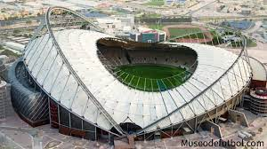
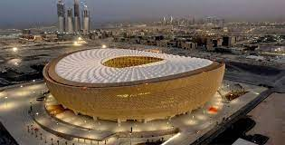
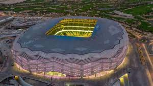
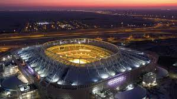

Al Thumama Stadium

21 de noviembre
Grupo A: Senegal-Países Bajos
23 de noviembre
Grupo E: España-Costa Rica
25 de noviembre
Grupo A: Catar-Senegal
27 de noviembre
Grupo F: Bélgica-Marruecos
29 de noviembre
Grupo B: RI de Irán-Estados Unidos
1 de diciembre
Grupo F: Canadá-Marruecos
4 de diciembre
Octavos de final: 1D-2C
10 de diciembre
Cuartos de final: W55-W57
Khalifa International Stadium
21 de noviembre
Grupo B: Inglaterra-RI de Irán
23 de noviembre
Grupo E: Alemania-Japón
25 de noviembre
Grupo A: Países Bajos-Ecuador
27 de noviembre
Grupo F: Croacia-Canadá
29 de noviembre
Grupo A: Ecuador-Senegal
1 de diciembre
Grupo E: Japón-España
3 de diciembre
Octavos de final: 1A-2B
17 de diciembre
Partido por el 3.er puesto
Al Bayt Stadium

20 de noviembre
Grupo A: Catar-Ecuador
23 de noviembre
Grupo F: Marruecos-Senegal
25 de noviembre
Grupo B: Inglaterra-Estados Unidos
27 de noviembre
Grupo E: España-Alemania
29 de noviembre
Grupo A: Países Bajos-Catar
1 de diciembre
Grupo E: Costa Rica-Alemania
4 de diciembre
Octavos de final: 1B-2A
4 de diciembre
Semifinal
Lusail Stadium
22 de noviembre
Grupo C: Argentina-Arabia Saudí
24 de noviembre
Grupo G: Brasil-Serbia
26 de noviembre
Grupo C: Argentina-México
28 de noviembre
Grupo H: Portugal-Uruguay
30 de noviembre
Grupo C: Arabia Saudí-México
2 de diciembre
Grupo G: Camerún-Brasil
5 de diciembre
Octavos de final
18 de diciembre
Final
Education City Stadium
22 de noviembre
Grupo D: Dinamarca-Túnez
24 de noviembre
Grupo H: Uruguay-República de Corea
26 de noviembre
Grupo C: Polonia-Arabia Saudí
28 de noviembre
Grupo H: República de Corea-Ghana
30 de noviembre
Grupo D: Túnez-Francia
2 de diciembre
Grupo H: República de Corea-Portugal
6 de diciembre
Octavos de final
6 de diciembre
Cuartos de final
Al Rayyan Stadium
20 de noviembre
Grupo A: Catar-Ecuador
23 de noviembre
Grupo F: Marruecos-Senegal
25 de noviembre
Grupo B: Inglaterra-Estados Unidos
27 de noviembre
Grupo E: España-Alemania
29 de noviembre
Grupo A: Países Bajos-Catar
1 de diciembre
Grupo E: Costa Rica-Alemania
4 de diciembre
Octavos de final
4 de diciembre
Semifinal
Al Janoub Stadium